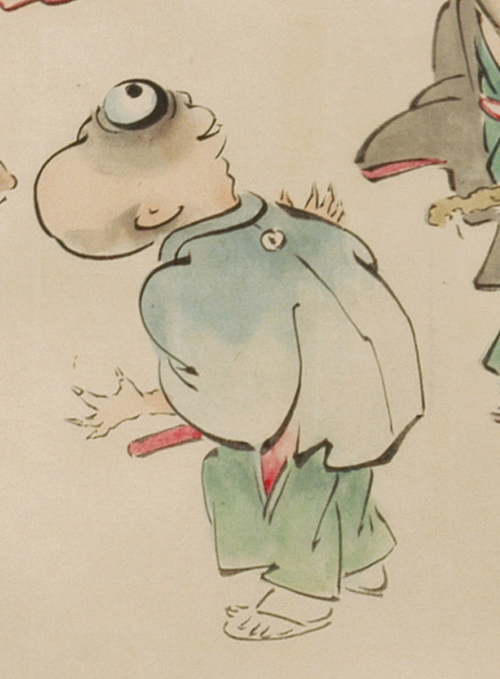

目玉がぎょろりと出た、青色の羽織と緑色の袴の化物。羽織の背に蛇の目の紋が入っている。禿頭で、一つ目のように見える。手は4本指に見え、鋭い爪が生えている。足袋と草履を履いている。
出典：親書誌：U426_nichibunken_0053：化物婚礼絵巻；バケモノコンレイエマキ／日付：2006／資源識別子：U426_nichibunken_0053_0013_0002
Copyright (c)2010- International Research Center for Japanese Studies, Kyoto, Japan. All rights reserved.